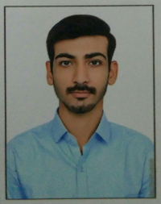

|  | Yash NarigaraMechanical Engineer B.Tech., NIT surat, 2020 contact no.- +917984750745 |
| Institute | % | Year of passing |
|---|---|---|
| L.G. Dholakiya school-10th | 93.33% | 2014 |
| K.G. Dholakiya school-12th | 92.62% | 2016 |
| Sardar Vallabhbhai National Institute of Technology | 79.5% | 2020 |
Software skills:Solidworks, AutoCAD, MS Office
Hands on experience:Hand Grinder, Drill, Lathe, Shaper
Reliance industries Ltd., Hazira
As a vocational trainee, learned about compressors, pumps, cooling tower.
Jyoti CNC Automation ltd.
As a vocational trainee, learned about casting, sheet metal working, stud welding, spot welding, manufacturing of CNC and VMC machine
Mechanical gun
sign and manufacturing of a Mechanical gun
Braille printer
Design and manufacturing of low cost Braille Printer
Exoskeleton
Design and manufacturing of full body weight lifting exoskeleton
Study of tribological aspects in automobile brake pads
To study the behaviour of tribological properties like friction, wear in conventional brake pads of automobile under varying condition by theoritical and by performing required experiments.
Innovation competition
Participated in Innovation competition with project Braille printer at NIT, Uttarakhand.
Techfest, MSU Vadodara
Participated in exhibition at MSU, Vadodara with project Exoskeleton.
Drishti - A revolutionary concept, Team member
Team member of a technical student chapter of SVNIT.
Annual Fest SPARSH, Co-ordinator
Managed informal event as a co-ordinator of committee in annual fest of SVNIT - SPARSH.
Grand Roboprix, Co-ordinator
As a team member of Drishti - a technical student chapter of SVNIT, managed the manufacturing team for the event.